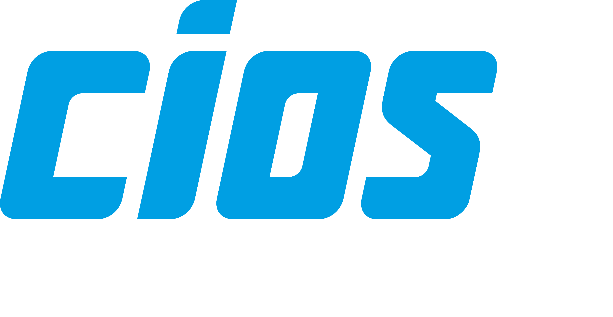
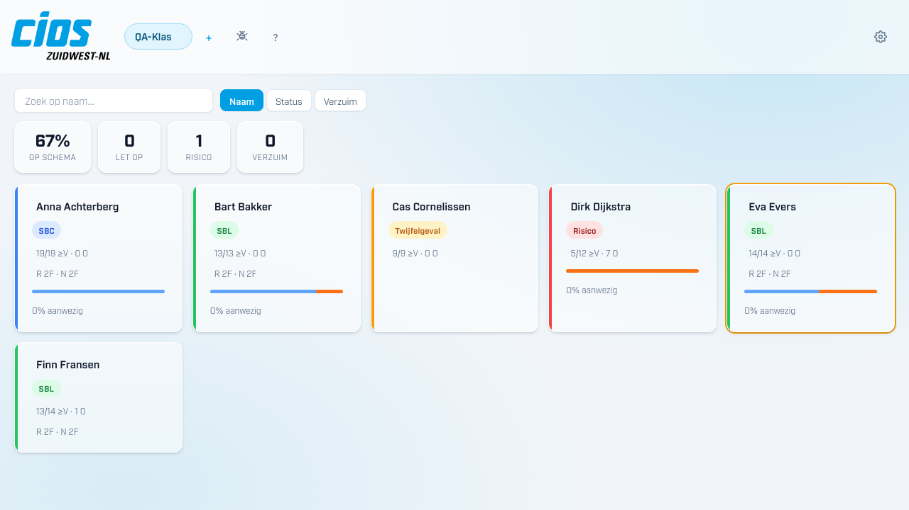

Je importeert elk kwartaal een overzicht vanuit Cumlaude. Het programma laat daarna meteen zien welke leerlingen extra aandacht nodig hebben — zonder dat je door eindeloze lijsten hoeft te zoeken.
Gratis · Geen account nodig · Gegevens blijven op jouw computer

Wat kan het?
Je hoeft niets te begrijpen van techniek. Het programma doet het zware werk — jij ziet alleen wat belangrijk is.
Je ziet in één oogopslag wie aandacht nodig heeft. Rood = ingrijpen. Oranje = in de gaten houden. Groen = prima bezig.
Download het beoordelingsoverzicht uit Cumlaude, sleep het in het programma en alles staat klaar. Klaar in een minuut.
Het programma berekent automatisch of een leerling op weg is naar SBL, SBC of BJ2, of dat bijsturing nodig is.
Je ziet per leerling hoeveel producten niet zijn ingeleverd of te laat zijn ingeleverd. Zo mis je nooit een signaal.
Je kunt meerdere klassen aanmaken en per klas leerlinggegevens opslaan. Handig als je mentor bent van meer dan één klas.
Alle informatie staat versleuteld op jouw eigen computer. Er gaat niets naar het internet of naar een centrale server.
Download
Weet je niet welk type Mac je hebt? Klik linksboven op het Apple-logo en kies Over deze Mac.
Voor Macs met een M1, M2, M3 of M4 processor. Bij Over deze Mac staat "Apple M…".
Download .dmgVoor oudere Macs met een Intel processor. Bij Over deze Mac staat "Intel Core…".
Download .dmgVoor computers met Windows 10 of Windows 11. Werkt op alle gewone Windows-laptops en desktops.
Installeren
Volg de stappen hieronder voor jouw computer. Het duurt gemiddeld twee minuten.
Weet je niet welke versie? Klik linksboven op het Apple-logo → Over deze Mac. Staat er "Apple M…"? Kies Apple chip. Staat er "Intel"? Kies Intel chip.
Ga naar je Downloads-map en dubbelklik op het bestand dat eindigt op .dmg.
Er opent een venster. Sleep het Mentordashboard-icoon naar de map Programma's die je daar ziet staan.
Zoek het programma op in je Programma's-map of Launchpad en dubbelklik erop.
Het programma start op met een korte rondleiding. Volg de stappen om je eerste klas aan te maken.
Klik op de blauwe knop onder "Windows". Je downloadt een bestand dat eindigt op .exe.
Ga naar je Downloads-map en dubbelklik op het gedownloade bestand.
Windows toont soms een blauw scherm met een waarschuwing. Dat is normaal bij programma's van buiten de Microsoft Store.
Klik op Volgende en daarna op Installeren. Het programma wordt automatisch geïnstalleerd.
Je vindt het programma in het Startmenu onder Mentordashboard CIOS. Bij de eerste start zie je een korte rondleiding.
Wel en niet
Zo weet je precies wat je kunt verwachten voordat je het installeert.
Versiegeschiedenis
Het programma wordt regelmatig verbeterd. Hieronder zie je de laatste wijzigingen.